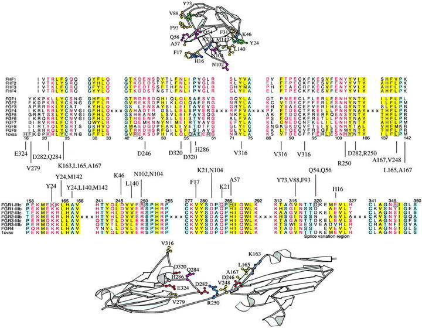

El mismo tipo de análisis que hicieron Chothia & Lesk (1986) sobre la relación entre la conservación de secuencia y estructura en las proteínas, resumido en la figura 5.1, se ha aplicado posteriormente al estudio de las interfaces moleculares. Por ejemplo, Aloy & Russell (2002) analizaron la conservación de las interfaces entre proteínas, mientras otros hemos estudiado las interfaces proteína-DNA, encontrando tendencias análogas (Contreras-Moreira & Collado-Vides, 2006):
|

|

|
 .
.
|
Estas observaciones pueden resumirse en esta generalización: proteínas con secuencias parecidas suelen dar lugar a interfaces similares. Los algoritmos que vamos a ver en esta sección, que se justifican (al menos en parte) por estas observaciones, se han aplicado para el diseño de proteínas y sus interfaces, puesto que muchas de sus funciones conocidas dependen de interacciones con otras moléculas. Su diagrama de flujo genérico podría ser éste:
De todas maneras hay que ser conscientes de que no deja de ser una simplificación centrarse solamente en la interfaz, pues sabemos que a veces los cambios en zonas lejanas de la proteína son más importantes para su función biológica, por ejemplo entre factores de transcripción parálogos (Hudson et al., 2016).